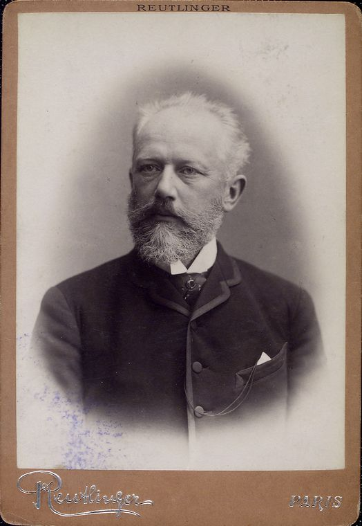

<div class="home">
  <div class="summary">
    <h1 class="tribute_title">Pyotr Ilyich Tchaikovsky</h1>
    <div class="tribute_paragraph">
      <p>
        
        Pyotr Ilyich Tchaikovsky was a Russian composer of the Romantic period. He was the first Russian composer whose
        music would make a lasting impression internationally. He was honored in 1884 by Tsar Alexander III and awarded
        a
        lifetime pension.
        <br>
        <br>
        Although musically precocious, Tchaikovsky was educated for a career as a civil servant. There was scant
        opportunity for a musical career in Russia at the time and no system of public music education. When an
        opportunity for such an education arose, he entered the nascent <a style="text-decoration: none;"
          href="https://en.wikipedia.org/wiki/Saint_Petersburg_Conservatory"><strong>Saint Petersburg
            Conservatory</strong> </a>, from which he graduated in 1865. The formal Western-oriented teaching that he
        received there set him apart from composers of the contemporary nationalist movement embodied by the Russian
        composers of <a style="text-decoration: none;"
          href="https://en.wikipedia.org/wiki/The_Five_(composers)"><strong>The Five</strong></a> with
        whom his professional relationship was mixed.
        <br>
        <br>
        <strong>The Five,</strong> also known as the <strong>Mighty Handful</strong>, <strong>The Mighty Five</strong>
        , and the <strong>New Russian School</strong>, were five prominent 19th-century Russian composers who worked
        together to create a distinct national style of classical
        music. They are:
        <br>
        <br>
      </p>
      <ul class="composer_list">
        <li>Mily Balakirev </li>
        <li>César Cui</li>
        <li>Modest Mussorgsky,</li>
        <li>Nikolai Rimsky-Korsakov</li>
        <li>Alexander Borodin</li>
      </ul>
    </div>
    <h2>Return To Russia</h2>
    <div class="return_section">
      <p>
        In 1884, Tchaikovsky began to shed his unsociability and restlessness. That March, Tsar Alexander III conferred
        upon him the Order of St. Vladimir (fourth class), which included a title of hereditary nobility and a
        personal audience with the Tsar. This was seen as a seal of official approval which advanced Tchaikovsky's
        social standing and might have been cemented in the composer's mind by the success of his Orchestral Suite
        No.
        3 at its January 1885 premiere in Saint Petersburg.
      </p>
    </div>
    <h2>Tchaikosky's Death</h2>
    <div class="death_section">
      <p>
        While Tchaikovsky's death has traditionally been attributed to cholera from drinking unboiled water at a local
        restaurant, there has been much speculation that his death was suicide. In the New Grove Dictionary of
        Music, Roland John Wiley wrote that "The polemics over [Tchaikovsky's] death have reached an impasse ... Rumors
        attached to the famous die hard ... As for illness, problems of evidence offer little hope of satisfactory
        resolution: the state of diagnosis; the confusion of witnesses; disregard of long-term effects of smoking and
        alcohol. We do not know how Tchaikovsky died. We may never find out".
      </p>
    </div>
  </div>
</div>